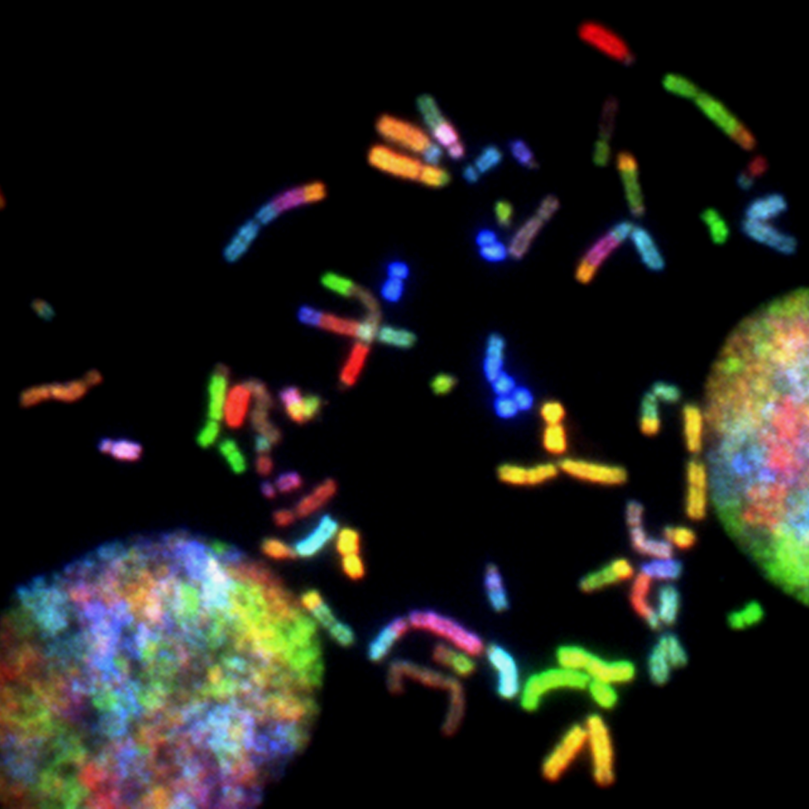

Fred Poon
2331 Portland St Apt 5, Los Angeles, CA 90007 | +1 (213)706 5650 | kwanpoon@usc.edu
Objective 
To pursue a career in molecular biology research.
Education
University of Southern California, Los Angeles CA 08/2021 - Present
Pharmacology and Drug Development B.S.
- Related Courses: Human Pharmacology: Challenge of Therapeutics in Society, Clinical Pharmacology and Medication Management, Molecular Biochemistry, Health Behavior Statistical Methods
University of California, Los Angeles, Los Angeles CA 09/2020 - 06/2021
Biochemistry B.S.
- Related Courses: Introduction to Public Health, General Chemistry for Life Scientists, General & Organic Chemistry
Experience
Research Assistant, Antagen Pharmaceuticals, Canton, MA 06/2023 - 08/2023
Topic: Systematic comparison of the in vivo half-lives of MGG4 variants of afucosylated monoclonal antibodies
- Skillfully collected bacterial samples and executed plasmid miniprep, ensuring quality isolation of plasmid DNA for subsequent analysis.
- Utilized PCR techniques, including overlapping PCR, to amplify DNA segments for in-depth studies.
- Applied DNA cloning techniques encompassing digestion, ligation, and transformation, contributing to the successful manipulation of genetic material.
- Conducted meticulous cell culture of B6 Chinese Hamster Ovary (CHO) cells, maintaining optimal conditions for consistent research outcomes.
- Assisted in data acquisition and analysis, utilizing fluorescence-activated cell sorting to contribute to result interpretation.
- Collaborated effectively with a multidisciplinary team, ensuring seamless communication and streamlined workflow; assisted lead researchers in delivering lessons by providing instructional support and 1-on-1 assistance to high school interns.
Individual Researcher, RegSci Research Team, USC, Los Angeles, CA 06/2022 - 05/2023
Topic: Exploring Availability and Access of Current Resources for Regulatory Consultations
- Assisted in research projects focusing on pharmacology and drug development.
- Collected and analyzed resources from government agencies, private corporations, and academia.
- Initiated literature reviews and supported other research teams on related projects.
- Responsible for data collection, data analysis, data management, and progress reports to ensure integrity and completeness.
Team Lead, School of Public Health, Yale University, Online 07/2021 - 08//2021
Topic: Statistics with Applications to Epidemiology
- Designed a Stroke Risk Factors Analysis to anticipate future health with increased accuracy and efficiency.
- Collected data from multiple resources focused on issues related to high-risk stroke groups.
- Conducted data analysis with SPSS and concluded possible solutions.
Lab Assistant, United Laboratories (TUL) Co., Ltd, Hong Kong, China 07/2019 - 08/2019
- Assisted in experiments involving the cultivation of suspension Chinese Hamster Ovary (CHO) cells.
- Participated in the generation of CHO single-cell clones, employing a meticulous approach to ensure accurate and reproducible results under the mentorship of Dr. Jing Li.
Skills
Research Tools
- ApE Software
- ChimeraX Software
- Basic Local Alignment Search Tool
Analytical Tools
- SPSS
- Microsoft Office Tools
Languages
- English (fluent)
- Mandarin (native)
- Cantonese (native)